# 安装包
if (!requireNamespace("readr", quietly = TRUE)) {
install.packages("readr")
}
if (!requireNamespace("ggplot2", quietly = TRUE)) {
install.packages("ggplot2")
}
if (!requireNamespace("ggExtra", quietly = TRUE)) {
install.packages("ggExtra")
}
if (!requireNamespace("hrbrthemes", quietly = TRUE)) {
install.packages("hrbrthemes")
}
if (!requireNamespace("dplyr", quietly = TRUE)) {
install.packages("dplyr")
}
if (!requireNamespace("tidyr", quietly = TRUE)) {
install.packages("tidyr")
}
if (!requireNamespace("viridis", quietly = TRUE)) {
install.packages("viridis")
}
if (!requireNamespace("ggpmisc", quietly = TRUE)) {
install.packages("ggpmisc")
}
if (!requireNamespace("ggpubr", quietly = TRUE)) {
install.packages("ggpubr")
}
if (!requireNamespace("geomtextpath", quietly = TRUE)) {
install.packages("geomtextpath")
}
if (!requireNamespace("cowplot", quietly = TRUE)) {
install.packages("cowplot")
}
# 加载包
library(readr) # 对于读取文件
library(ggplot2) # 用于创建图
library(ggExtra) # 用于增强 ggplot2 图形
library(hrbrthemes) # 对于专业主题
library(dplyr) # 用于数据操作
library(tidyr) # 用于重塑数据
library(viridis) # 对于颜色映射
library(ggpmisc) # 用于统计注释
library(ggpubr) # 适用于可发布主题
library(geomtextpath) # 用于向密度曲线添加文本
library(cowplot) # 绘图对齐和注释包密度图
密度图表示数值变量的分布，是使用核密度估计来显示变量的概率密度函数。密度图是直方图的平滑版本，使用相同的概念，比直方图更好地展示数据的总体趋势和形状。
示例
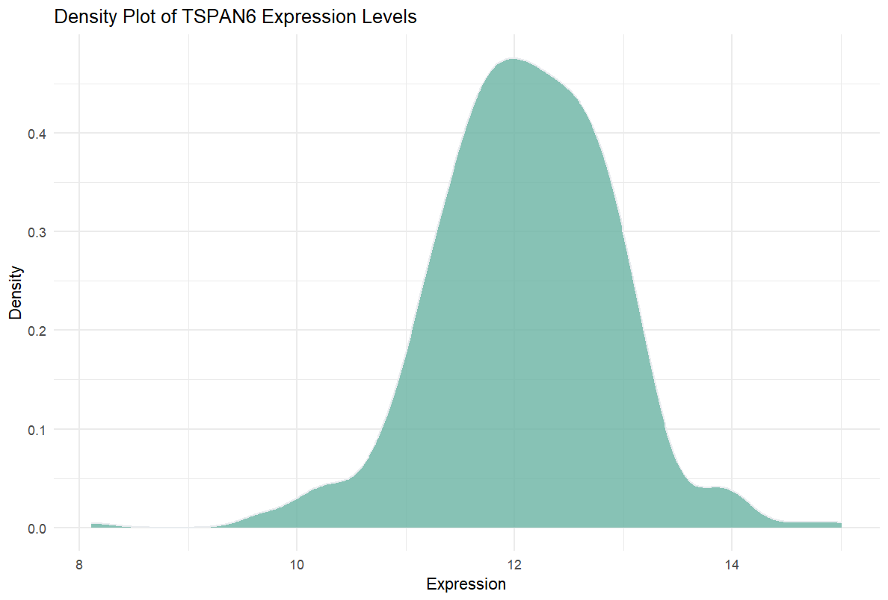
这个密度图展示了TSPAN6基因在多个样本中的表达水平分布情况。密度图X轴表示数据的具体值，也就是数据点的取值范围。在此图中，X轴表示基因的表达水平（如8到15）。密度图Y轴表示密度（Density），不是绝对的样本数量。密度图的Y轴可以理解为某个区间内数据值的“相对频率”。其计算方式是将直方图中每个条形的频率进行平滑处理，以形成一条连续的曲线。密度图的总面积为1，这表示数据在整个X轴范围内的相对概率分布。简单来说，它衡量了某个取值区间内的样本数量相对于总样本量的比例。
密度图与直方图不同的是，密度图在Y轴上使用密度值而不是绝对频数，从而更平滑地展示数据的分布情况。这种方式可以更清晰地看出数据的集中趋势和整体分布特征。
该图基因的表达量主要集中在10到13之间，且峰值在大约12附近，表示TSPAN6基因在大多数样本中表达量都相对一致，表达量在12附近的样本数量最多。密度图呈现单峰分布，说明大多数样本中TSPAN6基因的表达模式较为稳定。
环境配置
系统要求： 跨平台（Linux/MacOS/Windows）
编程语言：R
依赖包：
readr;ggplot2,ggExtra,hrbrthemes,dplyr,tidyr,viridis,ggpmisc,ggpubr,geomtextpath,cowplot
sessioninfo::session_info("attached")─ Session info ───────────────────────────────────────────────────────────────
setting value
version R version 4.6.0 (2026-04-24)
os Ubuntu 24.04.4 LTS
system x86_64, linux-gnu
ui X11
language (EN)
collate C.UTF-8
ctype C.UTF-8
tz UTC
date 2026-05-09
pandoc 3.1.3 @ /usr/bin/ (via rmarkdown)
quarto 1.9.37 @ /usr/local/bin/quarto
─ Packages ───────────────────────────────────────────────────────────────────
package * version date (UTC) lib source
cowplot * 1.2.0 2025-07-07 [1] RSPM
dplyr * 1.2.1 2026-04-03 [1] RSPM
geomtextpath * 0.2.0 2025-07-21 [1] RSPM
ggExtra * 0.11.0 2025-09-01 [1] RSPM
ggplot2 * 4.0.3.9000 2026-05-04 [1] Github (tidyverse/ggplot2@6870419)
ggpmisc * 0.7.0 2026-03-23 [1] RSPM
ggpp * 0.6.0 2026-01-18 [1] RSPM
ggpubr * 0.6.3 2026-02-24 [1] RSPM
hrbrthemes * 0.9.2 2026-05-04 [1] Github (hrbrmstr/hrbrthemes@45ac19c)
readr * 2.2.0 2026-02-19 [1] RSPM
tidyr * 1.3.2 2025-12-19 [1] RSPM
viridis * 0.6.5 2024-01-29 [1] RSPM
viridisLite * 0.4.3 2026-02-04 [1] RSPM
[1] /home/runner/work/_temp/Library
[2] /opt/R/4.6.0/lib/R/site-library
[3] /opt/R/4.6.0/lib/R/library
* ── Packages attached to the search path.
──────────────────────────────────────────────────────────────────────────────数据准备
以下是使用R内置数据集（iris, mtcars, diamonds）以及来自 UCSC Xena DATASETS 的TCGA-LIHC.htseq_counts.tsv数据集的简短教程。此示例演示了如何在R中加载和使用这些数据集。
# 读取TSV数据
data <- readr::read_csv("https://bizard-1301043367.cos.ap-guangzhou.myqcloud.com/TCGA-LIHC.htseq_counts.csv.gz")
# 过滤并重塑第一个基因 TSPAN6 的数据（Ensembl ID：ENSG00000000003.13）
data1 <- data %>%
filter(Ensembl_ID == "ENSG00000000003.13") %>%
pivot_longer(
cols = -Ensembl_ID,
names_to = "sample",
values_to = "expression"
) %>%
mutate(var = "var1") # 添加一列来区分变量
# 过滤并重塑第二个基因 SCYL3 的数据（Ensembl ID：ENSG00000000457.12）
data2 <- data %>%
filter(Ensembl_ID == "ENSG00000000457.12") %>%
pivot_longer(
cols = -Ensembl_ID,
names_to = "sample",
values_to = "expression"
) %>%
mutate(var = "var2") # 添加一列来区分变量
# 合并两个数据集
data12 <- bind_rows(data1, data2)
# 查看最终的组合数据集
head(data12)# A tibble: 6 × 4
Ensembl_ID sample expression var
<chr> <chr> <dbl> <chr>
1 ENSG00000000003.13 TCGA-DD-A4NG-01A 12.8 var1
2 ENSG00000000003.13 TCGA-G3-AAV4-01A 9.72 var1
3 ENSG00000000003.13 TCGA-2Y-A9H1-01A 11.3 var1
4 ENSG00000000003.13 TCGA-CC-A3M9-01A 11.6 var1
5 ENSG00000000003.13 TCGA-K7-AAU7-01A 11.5 var1
6 ENSG00000000003.13 TCGA-BC-A10W-01A 12.0 var1 可视化
1. 基础密度图
ggplot2包中可以借助geom_density构建密度图，只需要一个数值变量作为输入。
# 基础密度图
p1 <- ggplot(data1, aes(x = expression)) +
geom_density(fill = "#69b3a2", color = "#e9ecef", alpha = 0.8) +
labs(title = "Density Plot of TSPAN6 Expression Levels",
x = "Expression",
y = "Density") +
theme_minimal()
p1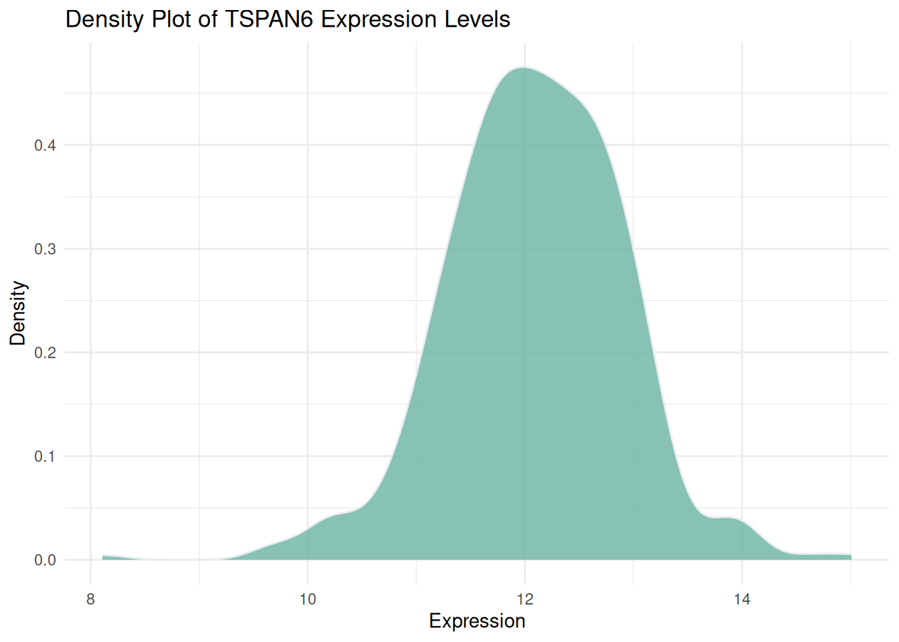
图 1 展示了TCGA来源的LIHC患者中TSPAN6基因在多个样本中的表达水平分布情况。
提示
theme_ipsum 您可以使用hrbrthemes软件包中的theme_ipsum：它易于使用，并能让您的图表看起来更专业。如您所见，theme_ipsum()附带一组预配置设置，例如字体大小、颜色和网格线，这些设置遵循良好的可视化实践，设计精良，可直接发布。
ggplot(data1, aes(x = expression)) +
geom_density(fill = "#69b3a2", color = "#e9ecef", alpha = 0.8) +
labs(title = "Density Plot of TSPAN6 Expression Levels",
x = "Expression",
y = "Density") +
theme_ipsum()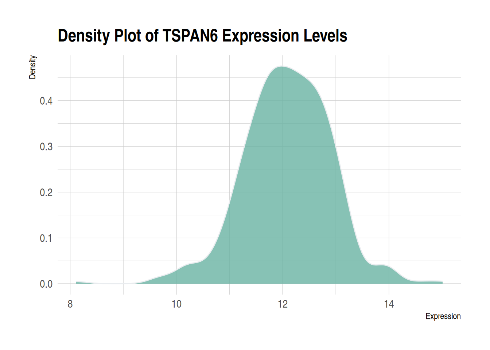
2. 镜像密度图
镜像密度图帮助我们非常直观地对比两个数据集的分布。通过镜像结构，可以快速判断两个数据集是否存在对称性或差异。镜像密度图将两个密度图整合在一张图上，减少了所需的可视化空间，同时保持了对数据分布的清晰描述。
# 绘制镜像密度图
ggplot(data12, aes(x = expression, fill = var)) +
# 绘制上半部分的密度曲线
geom_density(data = filter(data12, var == "var1"), aes(y = ..density..), fill = "#69b3a2", alpha = 0.8) +
geom_label(data = filter(data12, var == "var1"), aes(x = median(expression), y = 0.25, label = "TSPAN6"), color = "white", fill = "#1b9e77") +
# 绘制下半部分的密度曲线
geom_density(data = filter(data12, var == "var2"), aes(y = -..density..), fill = "#404080", alpha = 0.8) +
geom_label(data = filter(data12, var == "var2"), aes(x = median(expression), y = -0.25, label = "C1QA"), color = "white", fill = "#7570b3") +
# 图形美化
xlab("Expression") +
ylab("Density") +
ggtitle("Mirror Density Plot of TSPAN6 and C1QA") +
theme(legend.position = "none") +
theme_minimal()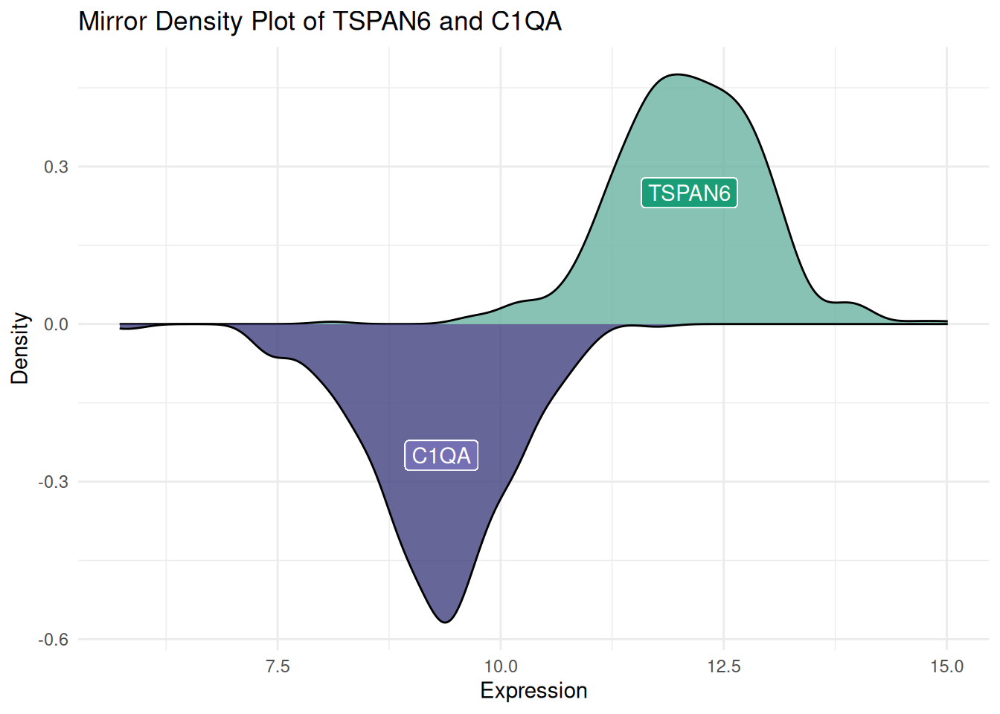
图 3 展示了TCGA来源的LIHC患者中TSPAN6和C1QA基因的表达量分布。也可以用同样的方法获得镜像直方图。
3. 多个组的密度图
多个组密度图的能够直观地比较不同组的分布差异，帮助识别趋势、模式和异常值，同时在同一图表中呈现多个组的数据，有助于快速对比组间特征。但是当组别较多或分布曲线重叠时，图形容易显得混乱，难以辨识各组的差异，导致图表的可读性下降。可以通过调整透明度来减少重叠区域的视觉干扰。不过，这种方法只能在一定程度上改善可视化效果，并非万能的解决方案，可以采用此文档后续的其他绘图方法来解决（例如分面密度图）。
# 不设置透明度（左）
p1 <- ggplot(data=diamonds, aes(x=price, group=cut, fill=cut)) +
geom_density(adjust=1.5) +
theme_minimal() +
ggtitle("p1")
# 设置透明度（右）
p2 <- ggplot(data=diamonds, aes(x=price, group=cut, fill=cut)) +
geom_density(adjust=1.5, alpha=.4) +
theme_minimal() +
ggtitle("p2")
plot_grid(p1, p2, ncol = 2)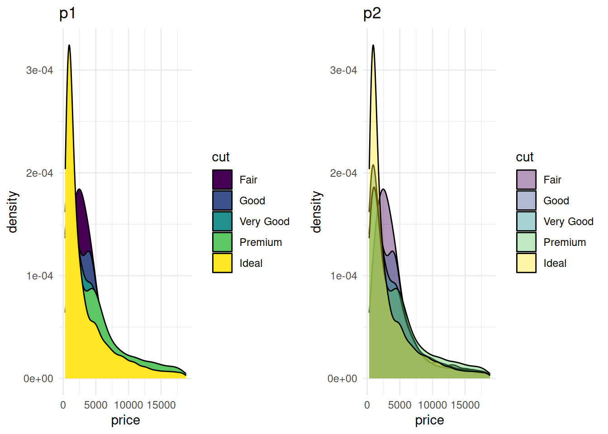
图 4 对比了不同透明度设置下的diamonds数据集价格分布的密度图。左侧图（p1）未设置透明度，所有分组的填充颜色不透明，图形整体较为拥挤，且分组间重叠较多，难以辨认信息；右侧图（p2）设置了透明度，使得不同分组的颜色层叠效果更为明显，从而能够更清楚地观察每个组别的密度分布特征。
# 创建注释框架
annot <- data.frame(
Species = c("setosa", "versicolor", "virginica"),
x = c(1.8, 4, 5.1), # 每个物种的注释位置
y = c(0.5, 0.9, .8)
)
# 生成密度图
ggplot(filter(iris, Species %in% c("setosa", "versicolor", "virginica")), aes(x = Petal.Length, color = Species, fill = Species)) +
geom_density(alpha = 0.6) +
scale_fill_viridis(discrete = TRUE) +
scale_color_viridis(discrete = TRUE) +
geom_text(data = annot, aes(x = x, y = y, label = Species, color = Species), hjust = 0, size = 4.5) +
theme_minimal() +
theme(
legend.position = "none"
) +
ylab("") +
xlab("Petal Length (cm)")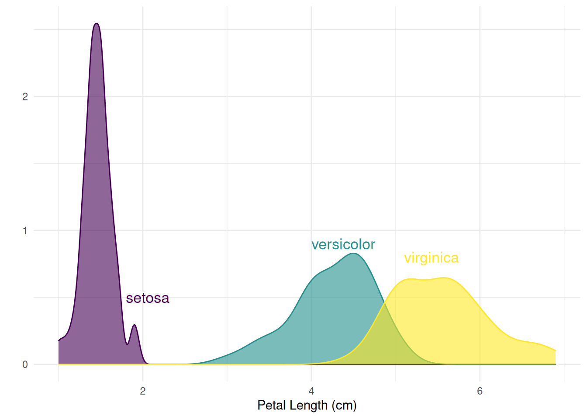
图 5 展示了Iris数据集中不同物种的花瓣长度（Petal.Length）分布密度，可以直观地看出每个物种在花瓣长度上的分布差异。
4. 分面密度图
多个变量的分面密度图通过在不同的面板中展示不同组的数据，可以更直观地比较各组之间的分布差异，减少了视觉上的杂乱。如果所有面板都共享相同的X轴，则仍可以比较各组的分布特征，例如中心位置、散布程度和形状。多个变量的分面密度图使用facet_wrap()实现。
ggplot(data=diamonds, aes(x=price, group=cut, fill=cut)) +
geom_density(adjust=1.5) +
theme_ipsum() +
facet_wrap(~cut) +
theme(
legend.position="none",
panel.spacing = unit(0.1, "lines"),
axis.ticks.x=element_blank()
)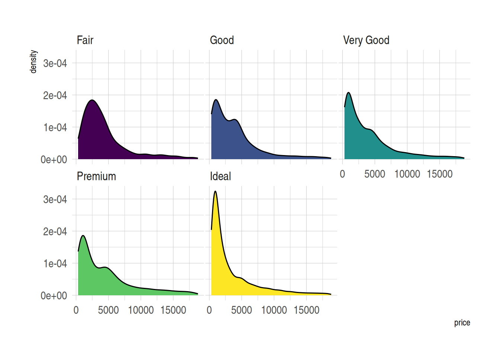
图 6 展示了diamonds数据集中不同切工等级的价格分布情况。每个切工组别的密度曲线单独分面显示，便于在相同坐标系下观察不同切工等级的价格分布形态。
5. 堆积密度图
堆积密度图中各组的密度分布被堆积起来，不会出现曲线重叠导致的混乱。但各组被堆叠在一起，很难理解不在图表底部的组的分布。（更推荐使用分面密度图）。
p <- ggplot(data=diamonds, aes(x=price, group=cut, fill=cut)) +
geom_density(adjust=1.5, position="fill") +
theme_ipsum()
p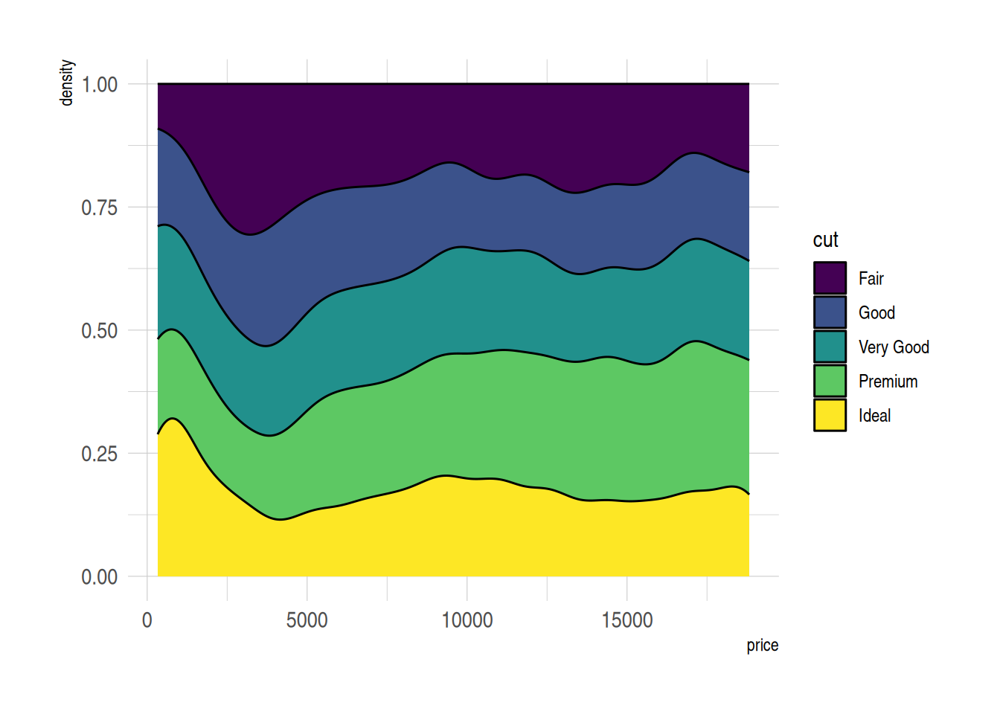
图 7 展示了diamonds数据中不同切工等级的价格相对分布。使用堆积密度图（position="fill"）使得所有组别在每个价格位置的累积密度总和为1，便于对比不同切工组别的相对密度分布。
6. 边际分布（密度图）
边际分布提供了关于数据的额外信息，不仅展示了变量之间的关系，还揭示了每个变量的独立分布特征。将边际密度图与散点图（或其他主图）结合的综合视角使得发现数据中的模式、异常值和趋势更加容易。使用ggExtra包中的ggMarginal()绘制边际分布（密度图）。
p <- ggplot(mtcars, aes(x = wt, y = mpg, color = factor(cyl), size = factor(cyl))) +
geom_point(aes(color = factor(cyl)), show.legend = TRUE) + # 散点图根据 cyl 变化大小
geom_smooth(method = 'lm', formula = y ~ x, se = TRUE, linewidth = 1, aes(color = factor(cyl))) + # 回归曲线颜色和宽度
scale_color_manual(values = c("#2e3b97", "#faad61", "#b76252")) + # 指定回归曲线颜色
stat_poly_eq(aes(label = paste(after_stat(eq.label), after_stat(rr.label), after_stat(p.value.label), sep = "~~~~")),
formula = y ~ x, size = 4,
hjust = -1, # 调整水平对齐
vjust = 1.1, # 调整垂直对齐
position = position_nudge(x = 2.7, y = 1)) +
theme(legend.position = "none") # 不显示图例
# 边际密度图
p1 <- ggMarginal(p, type="density")
p1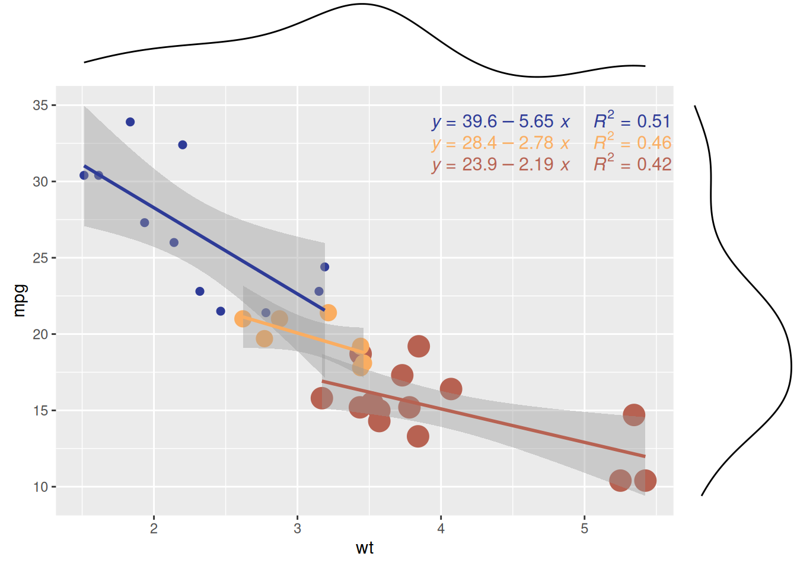
散点图展示了 mtcars数据集中不同气缸数量（cyl）的汽车在重量（wt）和每加仑里程数（mpg）之间的关系。该边际密度图显示了不同气缸数量（cyl）的汽车在wt（重量）和mpg（每加仑里程数）上的分布模式，从而揭示了wt或mpg在不同气缸组之间的差异性。
提示
边际分布密度图可修改的参数
- 使用
size参数来更改边际图的大小。 - 使用常用参数自定义边际图的外观。
- 使用
margins = 'x'或margins = 'y'仅显示一个边际图（x 轴或 y 轴）。
p <- ggplot(mtcars, aes(x = wt, y = mpg, color = factor(cyl), size = factor(cyl))) +
geom_point(aes(color = factor(cyl)), show.legend = TRUE) + # 散点图根据 cyl 变化大小
geom_smooth(method = 'lm', formula = y ~ x, se = TRUE, linewidth = 1, aes(color = factor(cyl))) + # 回归曲线颜色和宽度
scale_color_manual(values = c("#2e3b97", "#faad61", "#b76252")) + # 指定回归曲线颜色
stat_poly_eq(aes(label = paste(after_stat(eq.label), after_stat(rr.label), after_stat(p.value.label), sep = "~~~~")),
formula = y ~ x, size = 4,
hjust = -1.45, # 调整水平对齐，修改了水平对齐的值
vjust = 1.1, # 调整垂直对齐
position = position_nudge(x = 2.7, y = 1)) +
theme(legend.position = "none") # 不显示图例
# 边际密度图
p2 <- ggMarginal(p, type="density", margins = 'x', color="purple", size = 4) # 仅显示 x 轴边际密度图
p2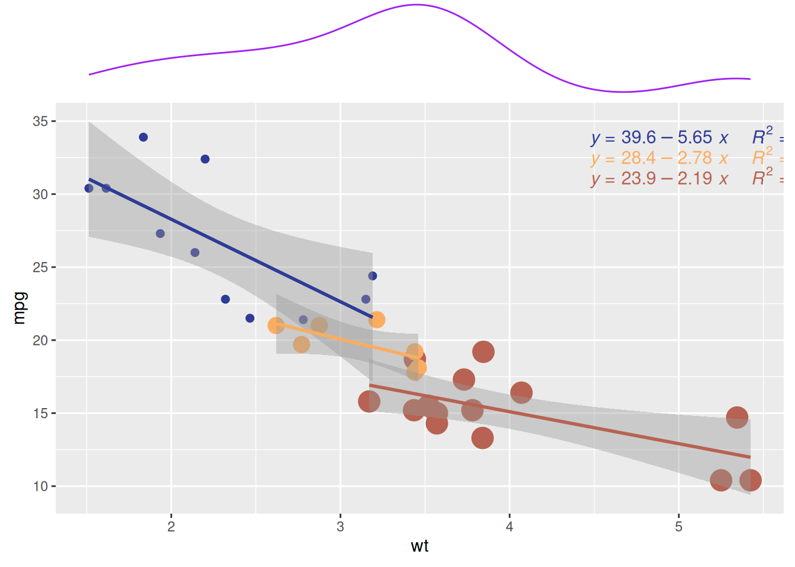
与前图类似，此图同样展示了mtcars数据集中不同气缸数量（cyl）的汽车在重量（wt）和每加仑里程数（mpg）之间的关系。该边际密度图显示了不同气缸数量（cyl）的汽车在mpg（每加仑里程数）上的分布模式。
7. 带标注的密度图
带标注的密度图能够在图中直接显示关键信息或组名，便于快速理解各组数据的分布和差异，无需借助图例，从而提升图表的可读性和信息传达效率。使用ggplot2和geomtextpath包在密度图的线上添加文本或标签。
ggplot(iris, aes(x = Sepal.Length, colour = Species, label = Species)) +
geom_textdensity() +
theme_bw() + guides(color = 'none')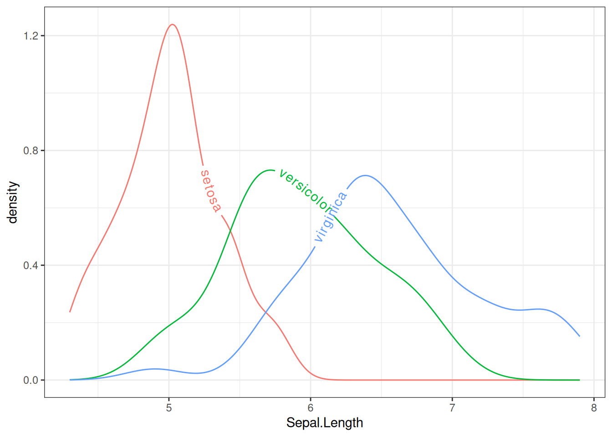
图 10 使用文本密度曲线表示iris数据集中不同物种的Sepal.Length分布。文本布局会根据分布密度动态调整，从而更容易直观地观察不同物种Sepal.Length的分布。
提示
可以更改geom_textdensity()的参数来改变标签的属性
-
size：文本的大小。 -
fontface：字体样式。 -
vjust：垂直调整。 -
hjust：水平调整。 最后两个参数可以是浮点数（通常在-1和1之间），也可以是字符串，例如xmid(或ymid)、xmax(或ymax)和auto(默认)。
mtcars$labels = ifelse(mtcars$vs==0, "Type 0", "Type 1")
ggplot(mtcars, aes(x = qsec, colour = as.factor(labels), label = as.factor(labels))) +
geom_textdensity(size = 6, fontface = 4, # 加粗斜体
vjust = -0.4, hjust = "ymid") +
theme_bw() + guides(color = 'none') # 移除颜色图例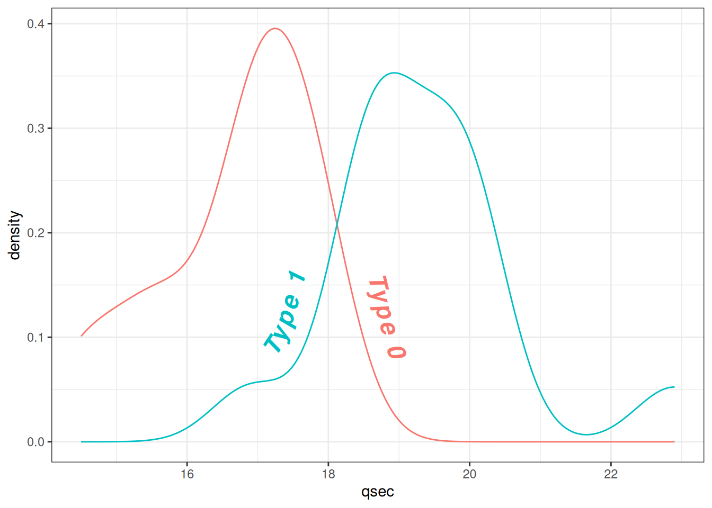
图 11 展示了mtcars数据集中qsec（1/4英里加速时间）与vs（发动机类型）的文本密度分布。通过更改文本密度属性使得标签更加醒目易读。
应用场景
1. 基础密度图
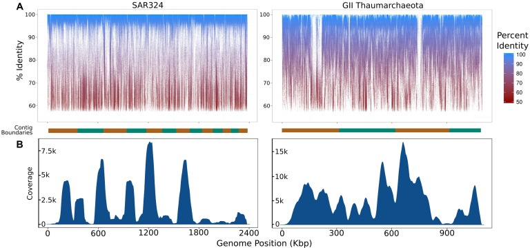
图 12: 本文使用的宏基因组学和单细胞数据集中组装的iSAGs的覆盖率总结。（A）宏基因组读数的片段募集图映射到本研究中构建的iSAG上。每个图底部的橙色和绿色交替条形显示重叠群边界，这些边界按从最长到最短的顺序排序。（B）密度图显示了映射到此处构建的iSAG上的原始SAG读数的相对覆盖率。[1]
2. 多个组的密度图
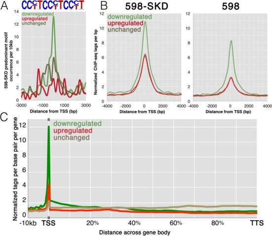
图 13: 激活与抑制启动子的分析。（A）在结合启动子处主要598-SKD结合基序（如上图所示，代表部分设计靶标基序）频率的标签密度图。彩色曲线对应于活性不变、下调或上调的基因上的 598-SKD 结合启动子。（B）跨表达组598-SKD靶启动子处598-SKD和598个ChIP-seq标签的标签密度图;绘图颜色对应于（A）中的颜色。（C）598-SKD跨启动子和基因体的标签密度图;绘图颜色对应于（A）中的颜色。[2]
3. 分面密度图
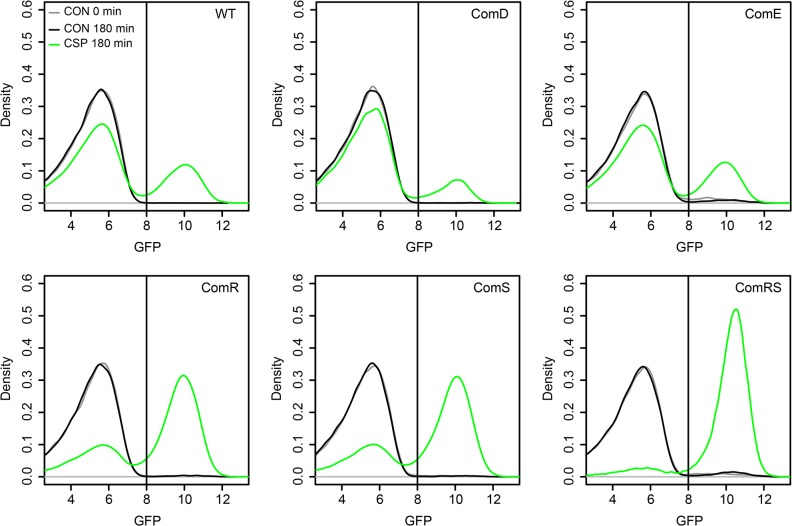
图 14 在LytFsm报告基因菌株背景中对comE、comR、comS和comRS进行过表达分析。[3]
参考文献
- Mende, D. R., Aylward, F. O., Eppley, J. M., Nielsen, T. N., & DeLong, E. F. (2016). Improved Environmental Genomes via Integration of Metagenomic and Single-Cell Assemblies. Frontiers in Microbiology, 7, 143. https://doi.org/10.3389/fmicb.2016.00143. PMID: 26904016; PMCID: PMC4749706.
- Grimmer, M. R., Stolzenburg, S., Ford, E., Lister, R., Blancafort, P., & Farnham, P. J. (2014). Analysis of an artificial zinc finger epigenetic modulator: widespread binding but limited regulation. Nucleic Acids Research, 42(16), 10856–10868. https://doi.org/10.1093/nar/gku708. PMID: 25122745; PMCID: PMC4176344.
- Reck, M., Tomasch, J., & Wagner-Döbler, I. (2015). The Alternative Sigma Factor SigX Controls Bacteriocin Synthesis and Competence, the Two Quorum Sensing Regulated Traits in Streptococcus mutans. PLoS Genetics, 11(7), e1005353. https://doi.org/10.1371/journal.pgen.1005353. PMID: 26158727; PMCID: PMC4497675.
- Wickham, H. (2016). ggplot2: Elegant graphics for data analysis. Springer. https://ggplot2.tidyverse.org
- Gao, Y. (2021). ggExtra: Add marginal plots to ggplot2. https://cran.r-project.org/package/ggExtra
- Rudis, B. (2020). hrbrthemes: Additional Themes and Theme Components for ‘ggplot2’. https://cran.r-project.org/package/hrbrthemes
- Wickham, H., François, R., Henry, L., & Müller, K. (2021). dplyr: A Grammar of Data Manipulation. https://cran.r-project.org/package/dplyr
- Wickham, H., & Henry, L. (2021). tidyr: Tidy Messy Data. https://cran.r-project.org/package/tidyr
- Garnier, S. (2018). viridis: Default Color Maps from ‘matplotlib’. https://cran.r-project.org/package/viridis
- Aubry, R., & Bouchard, C. (2020). ggpmisc: Miscellaneous Extensions to ‘ggplot2’. https://cran.r-project.org/package/ggpmisc
- Kassambara, A. (2021). ggpubr: ‘ggplot2’ Based Publication Ready Plots. https://cran.r-project.org/package/ggpubr
- Brown, C. (2022). geomtextpath: Curved Text on Geoms in ‘ggplot2’. https://cran.r-project.org/package/geomtextpath
- Wilke, C. O. (2020). cowplot: Streamlined Plot Theme and Plot Annotations for “ggplot2”. https://cran.r-project.org/package=cowplot